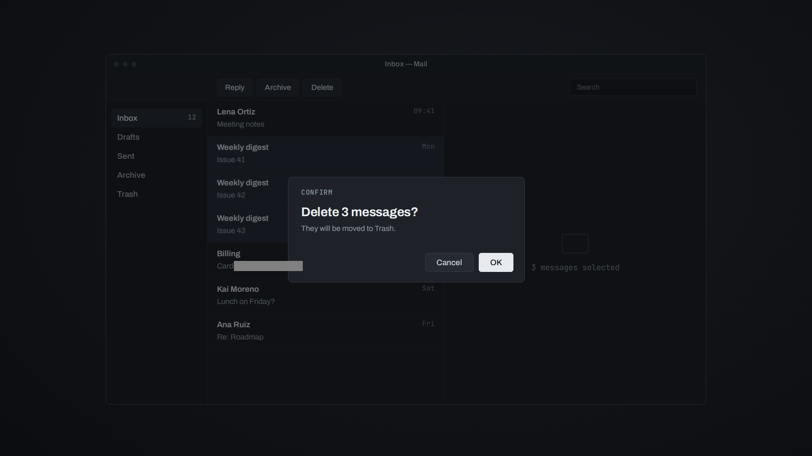

Inbox — Mail
Inbox 129
Drafts
Sent
Archive
Trash
Lena OrtizMeeting notes09:41
Weekly digestIssue 41Mon
Weekly digestIssue 42Mon
Weekly digestIssue 43Mon
BillingCard 4111 1111 1111 1111 chargedSun
Kai MorenoLunch on Friday?Sat
Ana RuizRe: RoadmapFri
Confirm
Delete 3 messages?
They will be moved to Trash.
Cancel
OK
Zero is using the computer
Zero is thinking…
Paused while you use the computer
Zero stopped. Press Ctrl+Alt+Esc to let it continue
Zero is done
 screen #1
screen #1
screen #2Screenshot: not attached(pass screenshot=true for one).
macOSAX API
WindowsUI Automation
LinuxAT-SPI2
AI CAN
SEE
YOUR SCREEN.
SEEING
ISN’T
USING.
USING.
SEE.
UNDERSTAND.
ACT.
VERIFY.
PAUSED.
STOPPED.
REMEMBER.
State after the action: now on screen #2 (new)
Delete the three old digests.
back on screen #1 (seen before)
Delete the three old digests.
get_app_state {"app":"Mail"}
click {"app":"Mail","element_index":4}
click {"app":"Mail","element_index":25}
get_app_state {"app":"Mail"}
click {"app":"Mail","element_index":5}
Ctrl
+
Alt
+
Esc
Zero Use Computer
OPEN SOURCE.
Read it.Run it.Change it.Ship it.
Apache-2.0·github.com/mhrsdev/zero-use-computer
Music: “Vibe Ace” by Kevin MacLeod (incompetech.com) · CC BY 4.0 · edited